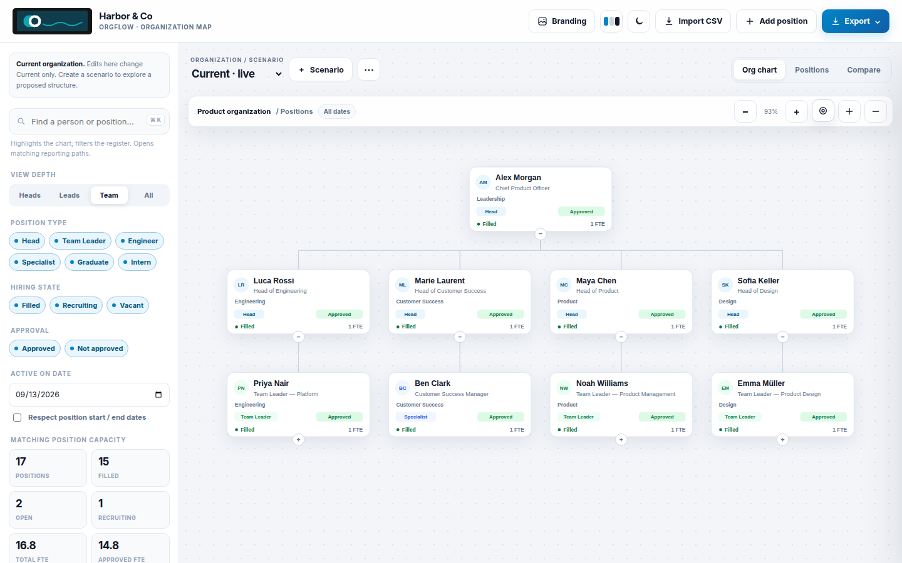
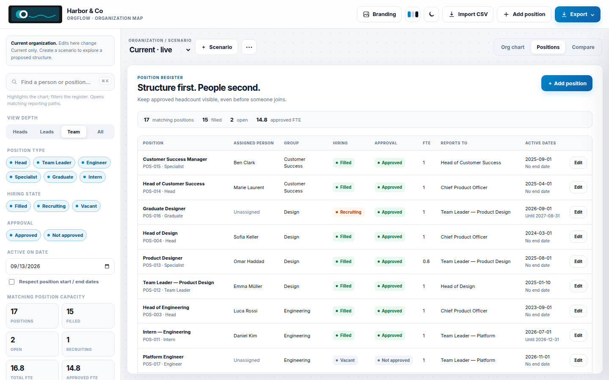
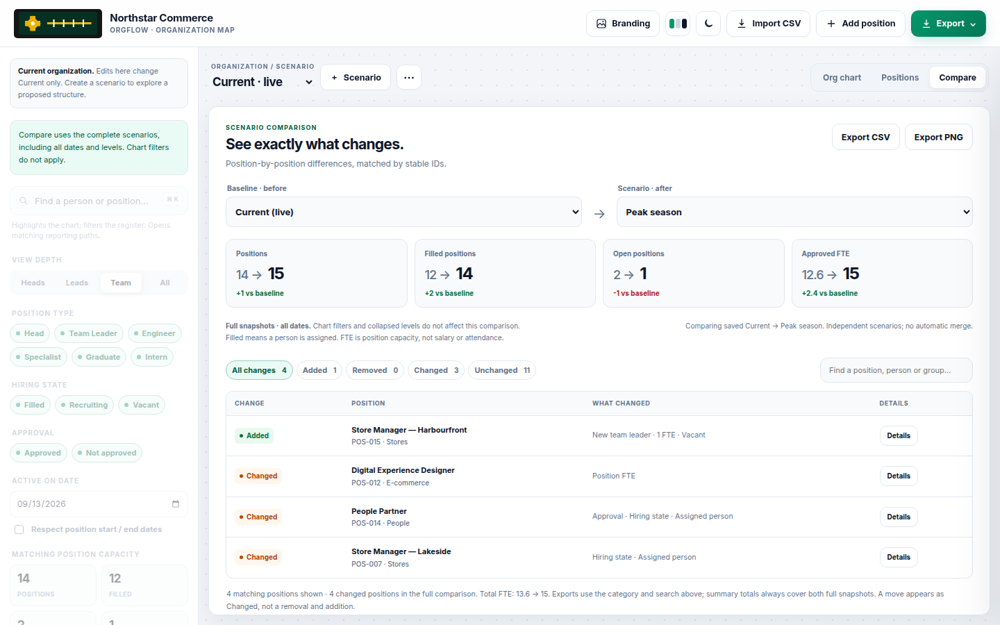

Drag to re-parent
Drop a card onto another manager. Cycles are blocked. The tree updates immediately; Undo puts it back.
Workforce planning without a backend
OrgFlow is an interactive org chart for positions, people and scenarios. Drag a card onto a new manager, undo the last ten minutes, then export a board pack — all in the browser you already have open.
No account. Harbor & Co loads as a local sample. Clearing site data removes the workspace, so export a JSON backup first.

Positions are not people. Vacant seats stay on the chart. Scenarios copy Current instead of overwriting it.
Drop a card onto another manager. Cycles are blocked. The tree updates immediately; Undo puts it back.
Optional local photos, location, cost center and job family on the card and in the position drawer.
⌘Z for this session. Earlier versions stay in this browser without photos or logos, so storage stays small.
A cover sheet, the current chart, and scenario comparison — generated as a JPEG PDF with no extra library.
A self-contained snapshot that opens as a file. The workspace JSON is inside, ready to restore in OrgFlow.
Matrix reporting is a second manager on the position. It draws dashed; it does not change the tree layout.
First Light, Lumen Studio and Cedar & Kind sit beside Harbor & Co and Northstar Commerce.
Location, cost center, job family and employee number import and export with the positions CSV.
Logos and photos are resized locally. Nothing is posted to a server unless you download and send a file yourself.
Open the app and load a sample from the sidebar, or start from the welcome tour.

